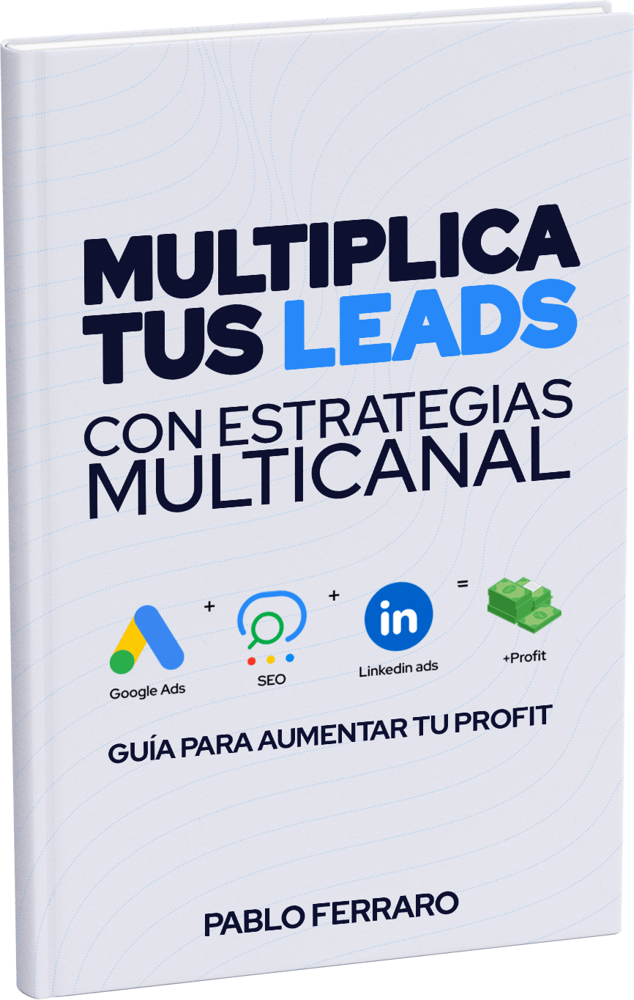

Soy Pablo Ferraro, cofundador de Mediabros y especialista en estrategias de marketing digital orientadas a
resultados. Desde 2007 ayudo a empresas B2B y B2C en toda LATAM a generar leads calificados y crecer de manera
sostenida.
Esta guía nace de lo que aplicamos todos los días en la agencia: procesos reales, campañas
activas y resultados medibles. No es teoría ni fórmulas mágicas. Es lo que usamos con
empresas que, como la tuya, quieren avanzar con foco y estructura.
Si tu empresa necesita generar oportunidades comerciales reales, esta guía te va a ayudar a dar el primer
paso con claridad.
Para empresas que quieren crecer en serio
No se trata de hacer más. Se trata de hacer lo correcto: campañas que convierten, con foco en
resultados medibles.

Dentro de la guía vas a descubrir
check
Los 3 errores más comunes que hacen perder presupuesto en campañas pagas.
check
Qué etapa de madurez digital tiene tu empresa y cómo avanzar desde ahí.
check
Qué canales usar (Google, Meta, LinkedIn, SEO) según tu modelo de negocio.
check
Cómo implementar una estrategia de leads que puedas medir, replicar y escalar.
Un proceso claro para empezar a generar oportunidades desde hoy.
Descarga la guía
Completa el formulario y recibí el acceso directo al recurso práctico.
Identifica tu etapa
La guía te ayuda a entender dónde esta tu empresa hoy y qué puedes hacer según tu
nivel de madurez digital.
Aplica la estrategia
Sigue las recomendaciones prácticas según tu objetivo: más leads, mejor conversión o
escalar campañas.
Preguntas frecuentes
Respuestas a las dudas más comunes sobre la guía gratuita.
¿La guía es realmente gratuita?
Sí, 100% gratuita. No tienes que dejar tarjeta ni contratar ningún servicio. Es un recurso pensado para
que tomes decisiones estratégicas con mejor información.
¿Qué incluye exactamente la guía?
Incluye un recorrido por el funnel de generación de leads, errores comunes que deberías evitar,
cómo elegir canales y plataformas, y ejemplos reales aplicables a tu empresa.
¿Esto me sirve si ya tengo campañas activas?
¡Definitivamente! Justamente si ya estás invirtiendo, esta guía te ayuda a revisar si
estás enfocado en lo correcto y cómo escalar tus resultados sin desperdiciar presupuesto.
¿Cuánto tiempo me toma leerla y aplicarla?
La puedes leer en menos de 30 minutos. Y vas a terminar con una hoja de ruta clara que puedes aplicar con tu equipo
interno o con apoyo externo.
¿Listo para empezar a generar leads reales?
Descargá gratis la guía y descubrí cómo aplicar una estrategia que genera
oportunidades comerciales concretas, sin promesas mágicas.